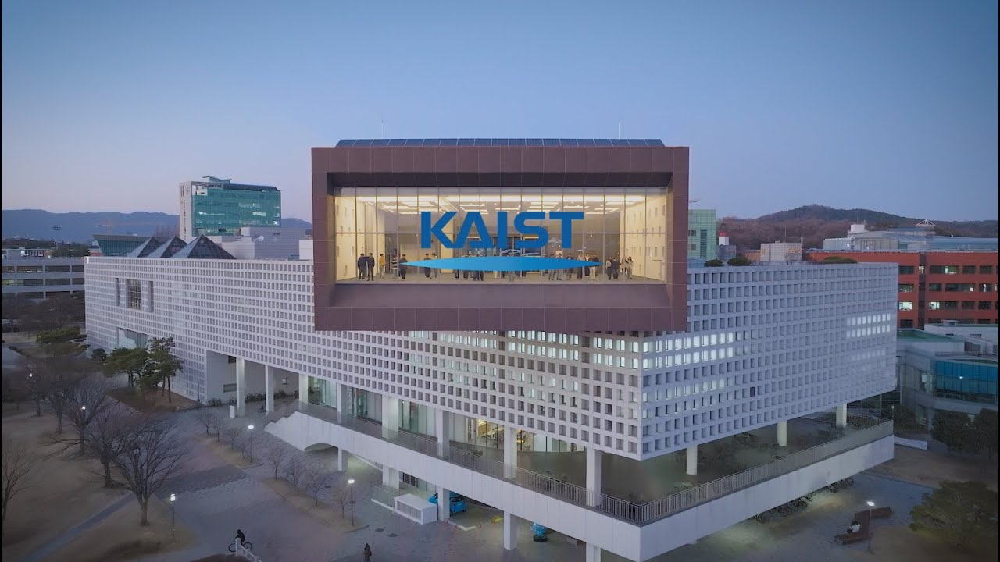

About Global Preview Week
We are soliciting applications from students at King Mongkut's University of Technology Thonburi (KMUTT) through this invitation page. KAIST SoC Global Preview Week is a short, intensive invitation program designed to introduce promising students to the research environment and graduate programs of KAIST School of Computing.
The main program will be held at KAIST in Daejeon, with a one-day cultural and networking visit to Seoul before departure. Participants will meet faculty members and graduate students, visit research labs, learn about graduate admissions and scholarships, and explore research internship or graduate study opportunities at KAIST.
KAIST will provide financial support for selected participants, covering round-trip airfare, accommodation, meals, and local program-related expenses during the official GPW period.
At a glance
KMUTT-only invitation pageFully supported20–30 participants total
- Dates: September 7–11, 2026
- Arrival: September 6, 2026
- Departure: September 12, 2026
- Location: KAIST, Daejeon + Seoul, South Korea
- Support: airfare, accommodation, meals, and local program-related expenses
- Application deadline: Friday, July 10, 2026
Experience KAIST
KAIST is Korea’s first research-oriented science and engineering university, located in Daejeon’s Daedeok Innopolis. This official promotional video gives a quick visual overview of KAIST’s campus, research environment, and academic community.
More official KAIST videos and promotional materials are available on the KAIST PR Materials page.

Watch KAIST promotional video on YouTubeThe video opens directly on YouTube to avoid embedded-player restrictions on some browsers or networks.
Why KAIST School of Computing?
KAIST School of Computing is one of Asia’s leading computer science schools, combining a compact, research-intensive faculty with strong graduate programs and broad research coverage across AI, systems, security, theory, software, HCI, graphics, and data-intensive computing.
Reference links: CSRankings is a metrics-based ranking using faculty publications in selective conferences; KAIST School of Computing overview; KAIST HCI research news; KAIST EE systems ranking news; KAIST Security@KAIST Fair news; THE KAIST profile; and KAIST College of Engineering QS ranking page.
Research Areas
KAIST SoC research spans the full stack of computing, from theoretical foundations to deployed systems and human-centered applications.
AI/ML & Data ScienceSystems & NetworksSecurity & PrivacySoftware EngineeringTheoryHCIGraphics & Vision
- Core systems: architecture, operating systems, networking, mobile and cloud systems.
- Secure computing: cybersecurity, privacy, cryptography, software and network security.
- AI and information services: machine learning, data mining, NLP, computer vision, and data systems.
- Human-centered computing: HCI, social computing, visualization, graphics, and interactive systems.
Academic Community
KAIST School of Computing is a large, research-intensive computing school with 1,100+ undergraduate students, 540+ graduate students, and 50+ faculty members according to the KAIST SoC overview.
Students in GPW will be able to interact with faculty members, graduate students, and international students across research areas, while learning about graduate admissions, scholarships, and possible research matches.
The School of Computing overview also lists 5,410 alumni, including 2,255 bachelor’s, 2,321 master’s, and 834 Ph.D. alumni.
Tentative Program
The detailed schedule may be adjusted, but the program is expected to include the following components.
Arrival, transfer to Daejeon, check-in, and informal welcome.
School overview, graduate program introduction, campus orientation, and welcome session.
Faculty research talks, lab tours, and discussions with graduate students.
Faculty/student mentoring, research interest sessions, and graduate admissions Q&A.
Small-group discussions, student presentations, and networking with international graduate students.
One-day cultural visit and networking program in Seoul before departure.
Participants return to their home countries.
KMUTT-only Application
This page is intended only for current students at King Mongkut's University of Technology Thonburi (KMUTT) who received this invitation link through their university, department, or a faculty member.
KAIST may request proof of current university affiliation during the selection process.
Eligibility
- Advanced undergraduate students or master’s students at KMUTT.
- Students in Computer Science, Computer Engineering, AI, Data Science, Cybersecurity, Electrical Engineering, Mathematics, or related fields.
- Students with strong academic records and research potential.
- Students who can participate in English and travel to Korea for the full program period.
Financial Support
There is no program fee for selected participants. KAIST will provide financial support covering round-trip airfare, accommodation, meals, and local program-related expenses during the official GPW period.
Personal expenses and costs outside the official program period will not be covered. Visa requirements and travel documents should be checked by each participant as early as possible after selection.
Apply
This application is open only to current King Mongkut's University of Technology Thonburi (KMUTT) students. Interested students should submit the application form by Friday, July 10, 2026. KAIST plans to finalize selection shortly after the deadline so that selected students can proceed with visa and travel arrangements without delay.
Application materials
- CV
- Transcript
- Statement of interest and relevant experience
- Research interests and preferred KAIST research areas/labs
- Passport and visa-related information
The application form opens in a new tab with invitation information pre-filled. Please do not modify the pre-filled invitation fields unless instructed.
Contact
KAIST School of Computing
Program inquiry: Prof. Min Suk Kang (International Collaboration Committee Chair at SoC; minsukk@kaist.ac.kr)
School website: KAIST School of Computing official website
KAIST website: https://www.kaist.ac.kr/en/
KAIST PR materials: https://www.kaist.ac.kr/en/html/kaist/012101.html
KAIST admissions information: KAIST Graduate Admissions
This page is intended for students from King Mongkut's University of Technology Thonburi (KMUTT) who received this invitation link through their university, department, or a faculty member. KAIST may request proof of current university affiliation during the selection process.